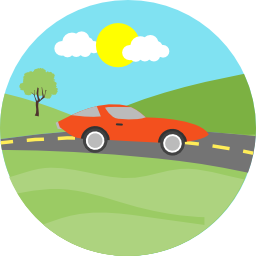

<!--
  Generated template for the MeusVeiculosPage page.

  See http://ionicframework.com/docs/components/#navigation for more info on
  Ionic pages and navigation.
-->
<ion-header>

  <ion-navbar>
    <button ion-button menuToggle>
      <ion-icon name="menu"></ion-icon>
    </button>
    <ion-title>Meus veículos</ion-title>
    <ion-buttons end>
      <button ion-button icon-only (click)="chamaCadastroVeic()">
        <ion-icon name="add-circle"></ion-icon>
      </button>
    </ion-buttons>
  </ion-navbar>

</ion-header>


<ion-content padding>

  <!-- <ion-card>
<ion-card-header text-center>
      Meus veículos
    </ion-card-header> -->

  <ion-list>
    <ion-item *ngFor="let veic of this.veiculo">
      <div item-start>
        
      </div>
      <h2>{{veic.apelido}}</h2>
      <p>{{veic.marca}} - {{veic.modelo}}</p>
      <button ion-button clear icon-only item-end (click)="showAlert(veic)">
        <ion-icon name="trash"></ion-icon>
      </button>
      <button ion-button clear icon-only item-end (click)="chamaCadastroVeic(veic)">
        <ion-icon name="create"></ion-icon>
      </button>
    </ion-item>
  </ion-list>

  <!-- <ion-list>

      <ion-item>
        <button ion-item *ngFor="let veic of this.veiculo" (click)="chamaCadastroVeic(veic)">
          <ion-row>
            <ion-col col-3>
              
            </ion-col>
            <ion-col col-9 text-center style="margin-top:10px">
              {{veic.marca}} - {{veic.modelo}}
            </ion-col>
          </ion-row>
        </button>
      </ion-item>

    </ion-list> 
  </ion-card>-->

</ion-content>